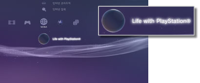

네트워크 > Life with PlayStation®에 대하여
Life with PlayStation®에 대하여
Life with PlayStation®이란 [시간]과 [장소]를 키워드로 인터넷 상의 다양한 콘텐츠를 표현하는 어플리케이션입니다. 채널을 선택함으로써 서로 다른 다양한 콘텐츠도 즐기실 수 있습니다.
Life with PlayStation®의 기동중에는 Folding@home™에도 자동으로 참여하게 됩니다. Folding@home™은 미국 스탠포드 대학이 진행하는 분산 컴퓨팅 프로젝트입니다.
Life with PlayStation® 기동하기
Life with PlayStation®을 사용하시려면 프로그램을 다운로드/설치하셔야 합니다.  (네트워크)에서
(네트워크)에서  (Life with PlayStation®)을 선택하면 인터넷에서 프로그램을 다운로드할 수 있습니다. 화면의 지시에 따라 조작해 주십시오.
(Life with PlayStation®)을 선택하면 인터넷에서 프로그램을 다운로드할 수 있습니다. 화면의 지시에 따라 조작해 주십시오.

알아두기
- Life with PlayStation®을 기동하시려면 PS3™의 하드 디스크에 500MB 이상의 빈 용량이 필요합니다.
 （Folding@home™）의 아이콘이 표시되어 있는 경우에는 Folding@home™을 업데이트한 후 life with PlayStation®으로 업데이트해야 합니다. (네트워크)에서 (Folding@home™)을 선택한 후 화면의 지시에 따라 Folding@home™을 업데이트해 주십시오. 업데이트 후 다시 한번 (네트워크)에서 (Folding@home™)을 선택하여 화면의 지시에 따라 Life with PlayStation®으로 업데이트해 주십시오.
（Folding@home™）의 아이콘이 표시되어 있는 경우에는 Folding@home™을 업데이트한 후 life with PlayStation®으로 업데이트해야 합니다. (네트워크)에서 (Folding@home™)을 선택한 후 화면의 지시에 따라 Folding@home™을 업데이트해 주십시오. 업데이트 후 다시 한번 (네트워크)에서 (Folding@home™)을 선택하여 화면의 지시에 따라 Life with PlayStation®으로 업데이트해 주십시오.
Life with PlayStation® 종료하기
Life with PlayStation®의 기동중에 무선 컨트롤러의 PS 버튼을 눌러 (네트워크)에서  (종료하기)를 선택합니다.
(종료하기)를 선택합니다.
자동 기동 설정하기
일정 시간 동안 PS3™를 조작하지 않을 경우 Life with PlayStation®을 자동으로 실행합니다. (네트워크)에서 (Life with PlayStation®)을 선택하고  버튼을 누른 후 옵션 메뉴에서 [자동 기동]을 선택합니다.
버튼을 누른 후 옵션 메뉴에서 [자동 기동]을 선택합니다.
| 끄기 | Life with PlayStation®을 자동으로 실행하지 않습니다. |
|---|---|
| 10분 후 | 10분 후에 Life with PlayStation®을 실행합니다. |
| 20분 후 | 20분 후에 Life with PlayStation®을 실행합니다. |
| 30분 후 | 30분 후에 Life with PlayStation®을 실행합니다. |
알아두기
PS3™를 인터넷에 접속하지 않은 경우 [자동 기동]은 비활성화됩니다.
Life with PlayStation® 삭제하기
Life with PlayStation® 프로그램을 하드 디스크에서 삭제합니다. （네트워크）에서 （Life with PlayStation®） 을 선택하고 버튼을 누른 후 옵션 메뉴에서 [삭제]를 선택합니다.
알아두기
프로그램이 삭제되어도 （Life with PlayStation®） 아이콘은 XMB™에서 삭제되지 않습니다. 아이콘을 선택하면 Life with PlayStation® 프로그램이 다시 다운로드됩니다.